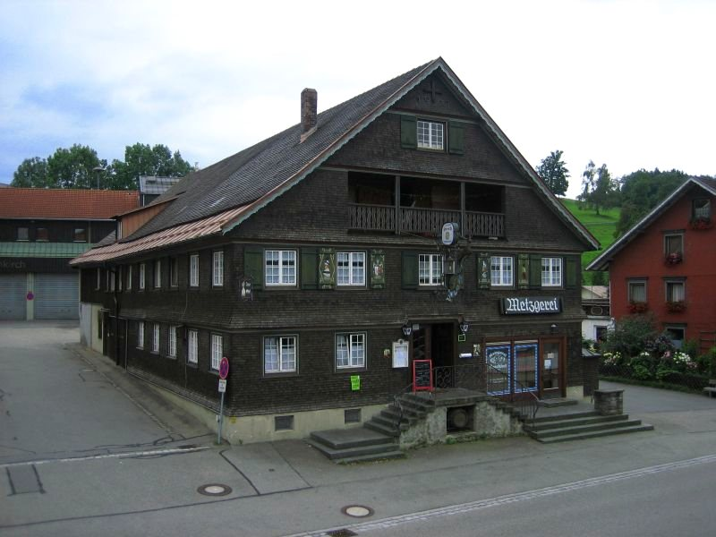

Gasthof Hirsch
Gut bürgerliches Essen. Mittwoch bis Sonntag, mitten in Heimenkirch.
Familie Gaul · Lindauer Straße 1 · 88178 Heimenkirch
Mittwoch bis Sonntag geöffnet
Montag und Dienstag Ruhetag
| Tag | Tagsüber | Abends |
|---|---|---|
| Montag | Ruhetag | |
| Dienstag | Ruhetag | |
| Mittwoch | 9:30–14:00 | 17:30–22:00 |
| Donnerstag | 9:30–14:00 | – |
| Freitag | 9:30–14:00 | 17:30–24:00 |
| Samstag | 9:30–14:00 | 17:30–24:00 |
| Sonntag | 9:30–14:00 | – |
Aus der Küche
4,7 von 5 Sternen bei rund 240 Rezensionen auf Google. Stand: 5. Oktober 2026.
«Gut bürgerliches Essen» – so steht es bei uns, und mehr Worte machen wir darum nicht. Was auf den Teller kommt, beschreiben die Gäste.
-
Hirschgulasch mit Spätzle
«Wir haben hier das beste Hirschgulasch seit langem gegessen. Absolut zart, einer tollen Sauce und mit herlichen, selbstgemachten Spätzle.»
Thomas N. · Google-Rezension, 2019
-
Zwiebelrostbraten
«Super Essen, insbesondere der Zwiebelrostbraten.»
Dave · Google-Rezension, 2019
-
Currywurst mit Pommes
«Beste Curry Wurst mit Pommes in der Gegend. Beilagen Salat super ich liebe ihn»
Joooy G. · Google-Rezension, 2019
-
Und die Portionen
«Immer wieder prima, und riesige Portionen.»
Marcus K. · Google-Rezension, 2020
Familienfeier oder größere Runde? Am besten kurz anrufen: 08381 7601
Das Haus

Der Hirsch steht in der Mitte von Heimenkirch: ein dunkles Schindelhaus mit grünen Fensterläden, am Giebel das schmiedeeiserne Schild mit dem kupfernen Hirsch.
Familie Gaul führt hier ein Traditions-Gasthaus mit gut bürgerlicher Küche, Bierterrasse und einfachen, originellen Gästezimmern.
Aus dem Gästebuch
«Das Essen ist gut bürgerlich, mit reichhaltigen Portionen. Das Ambiente ist urig und rustikal. Super nette Inhaber. Wir kommen immer wieder gern.»
«Wir kommen seit Jahren in dieses Lokal, urig voller Herzlichkeit!! Als die Kinder noch klein waren und nicht immer leise, kein Problem.»
«Gut bürgerliche Küche, mit dem Scharm einer alt würdigen Dorfwirtschaft. Super.»
Alle Rezensionen auf Google lesen Zitate aus Google-Rezensionen, Stand 5. Oktober 2026
Übernachten
«Super nett und zuvorkommend. Spitzen Frühstück und günstiger Preis.» Jörg B. · Google-Rezension, 2019
Im Haus gibt es einfache, originelle Einzel- und Doppelzimmer – für eine Nacht auf der Durchreise oder ein paar Tage im Westallgäu. Morgens gibt es ein reichhaltiges Frühstück.
Rund um Heimenkirch
Grüne Wiesen, stille Wälder und sanft geschwungene Hügel: Die Landschaft rund um Heimenkirch ist ein Paradies für Wanderer und Radfahrer.
- Meckatzer Löwenbräu
- Die Brauerei ist als Familienbetrieb in Heimenkirch verwurzelt. Brauereibesichtigungen gibt es im Ortsteil Meckatz.
- Wandern und Radfahren
- Zahlreiche Wanderwege führen durch die 20 Ortsteile mit ihren Bauernhöfen. Im Sommer: Freibad und Tennisplätze.
- Im Winter
- Gespurte Langlaufloipen, Rodeln, Eisstockschießen und Winterwanderungen.
- Sehenswert
- Schloss Syrgenstein, die Pfarrkirche St. Margaretha, die Heimatstube und vier Kapellen in den Ortsteilen.
Angaben: Markt Heimenkirch und Gastgeberverzeichnis Westallgäu.
Der Weg zu uns
Gasthof HirschLindauer Straße 188178 Heimenkirch 08381 7601 info@gasthaushirsch-heimenkirch.deDer Hirsch liegt in der Ortsmitte von Heimenkirch im Landkreis Lindau, im bayerischen Westallgäu. Sie erkennen das Haus an der dunklen Schindelfassade und am Schild mit dem Hirsch.
Die Karte wird von OpenStreetMap geladen. Dabei wird Ihre IP-Adresse an die Server der OpenStreetMap Foundation übertragen.
Mehr in der DatenschutzerklärungRoute planen Koordinaten: 47.62948, 9.90274